Chapter 4 Data visualisation
Humans are highly visual creatures, exploit that. Visual depictions of the distribution and trends in your data are not only appealing to the eye, at times these may tell us more than a bunch of p-values and the like. Data visualization is a strong point of R and covered in a variety of packages. My package of choice?
The ggplot package allows (copious customization possibilities), it can provide aesthetically-pleasing plots, and you can plot various things including graphs that you can interact with in real-time”. As you might suspect, this will be a very visual chapter. I will go over:
- The basics of ggplot2. I’ll go over aspects such as the aes() part (aesthetics) and what arguments to put where.
- Simple demonstration on how to plot a variety of graphs and some nice “additions” to them. I will restrain myself to histograms (with normal distribution indication), density plots, box plots, (split) violin plots, bar graphs, pie charts, and scatter plots. I will not heed much attention to aesthetics and professional look of the plots, that part will be covered next.
- More in depth customization to make them professional and beautiful. Demonstrating how to adjust some important elements of the canvas and the graphs on it (the text elements, colors, sizes, how to hide things, …) and how to combine plots cowplot package. This will be illustrated in two “more advanced” examples in which I also address some issues that you might not expect.
- Interactive graphs. These will be ideal for R Markdown reports (HTML output style), when you have multiple cluster units (like participants or species of something), or when you want to look at change over time.
4.1 The language of ggplot
Similar to the pipes and specific functions of dplyr, ggplot has it own language. Lets quickly familiarize. Everything starts with the following code: your dataset %>% ggplot(aes() ) or without pipelining ggplot(data= your dataset, aes()). The ggplot() part will draw an empty canvas where you will add elements like lines, bars, points, etc.
In the aes() part, which stands for aesthetics, you will define characteristics of the things you want to draw, like the values on the x-axis, values on the y-axis, color, text, and so on. However, the characteristics put within aes() will always be based of your dataset. In other words, if you need something (values or text) from your data for your plot, put it in aes(), if not, put it outside. Say you have the following data:
pacman::p_load(dplyr, ggplot2)
set.seed(1)
example_dataset = data.frame(
group = factor(c(1,2,3)),
x = round(runif(3,1,10),0),
y = round(runif(3,1,10),0)
)You want plot the cross points where y crosses x. Of course the values on the x-axis and those on the y-axis need to be taken from our dataset itself. So we need to put these in aes(), not outside of it.

We could actually define two aesthetics, one within ggplot() and/or one within geom_point(). The difference is that the aes() within ggplot() will apply the defined characteristics to all your drawings (lets’ call it the global aesthetics).
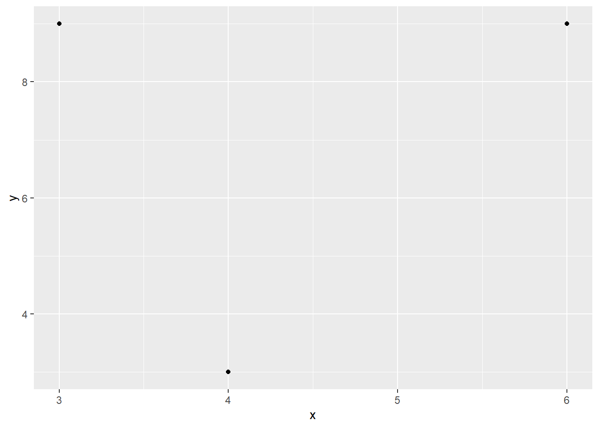
The aes() within geom_point() will apply stuff only to that drawing (call it the local aesthetics), only to the points in this case. Its good to know that the global aesthetics can be overridden in the local aesthetics (as demonstrated later on) so that your lines, bars, and point can be colored differently.
Moving on. Assume we want to color every point red. We can do this without “referring” to our dataset, and therefore we put it outside aes()
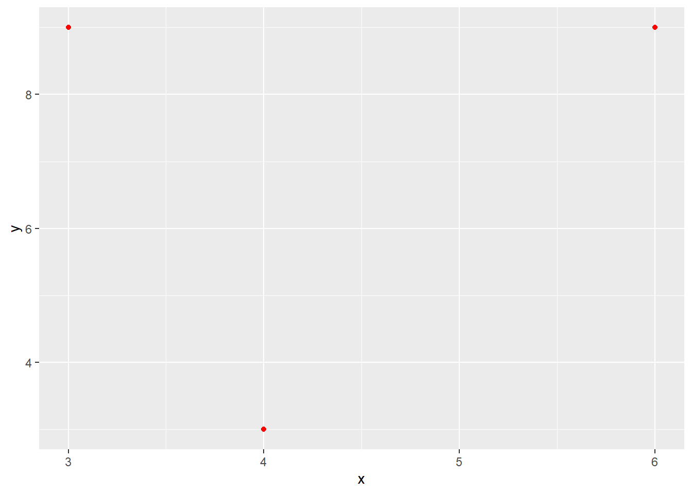
However, what if we want to give the points a different color based on the group variable from our dataset? Indeed, you will need to put within an aesthetic.
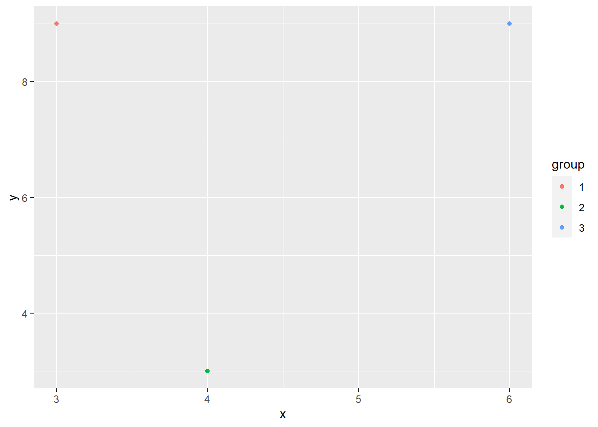
To end this part, let me prove that that a local aesthetic can override the global one. All points will be blue:
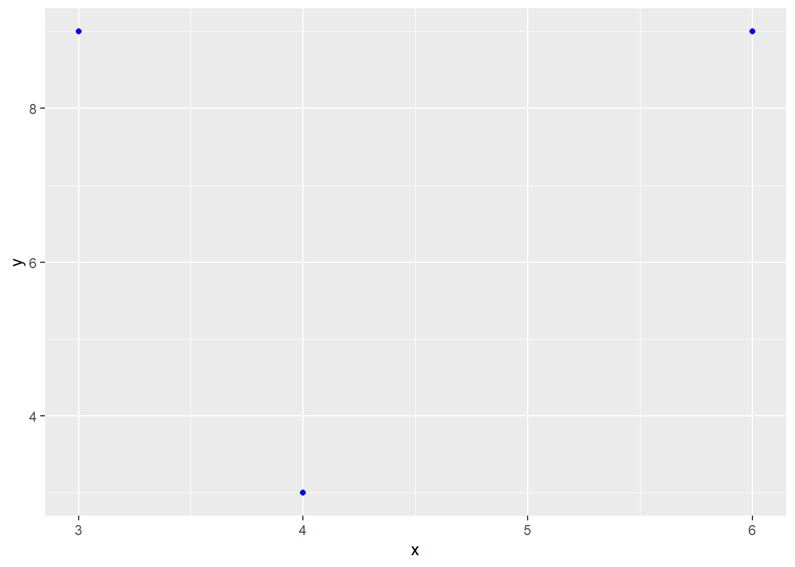
4.2 Plotting various graphs.
Now the fun part, ggplot allows to plot various graphs with many customization options. Before I demonstrate some important customization possibilities, I will show R code that will output a variety of common graphs (e.g., histograms and bar graphs) as well as some less common ones. For this purpose I will use a custom dataset provided by R about three species of flowers.
4.2.1 Histogram
Starting of with the classics.
# Suppose we want to have black contours and a white fill color
mydata %>% ggplot(aes(x=Sepal.Length)) + geom_histogram(fill = "white", color ="black",bins=20)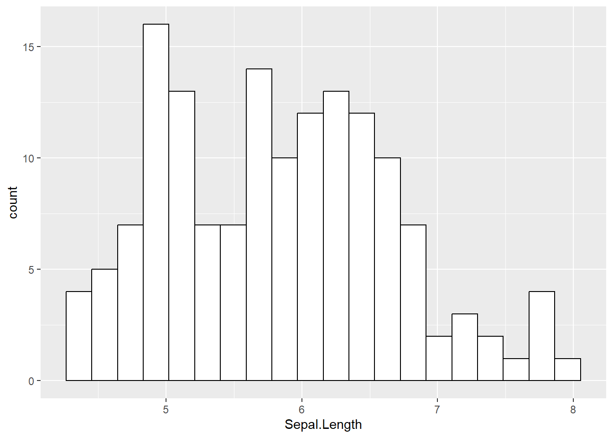
4.2.2 Density plots
# Blue fill color (i.e., the area covering by the density plot) and making it transparent
mydata %>% ggplot(aes(x=Sepal.Length )) + geom_density(fill ="blue3", alpha =0.50)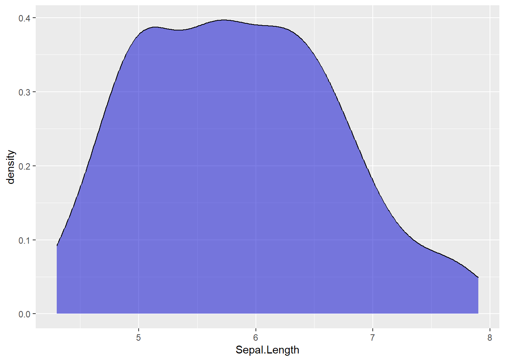
You can also put a density plot over a histogram. Note that a histogram shows the counts of values within a given range while a density plot shows the proportion. As a consequence, they do not share the same y-axis, and we will need to fix this using the following argument (y = ..density..).
# Histogram: black contour, blue fill, a bit of transparency
# Density plot: yellow fill, a high degree of transparency
# In addition:
# A vertical black line indicating the mean of Sepal length
# A vertical red line indicating the median of sepal Length
mydata %>% ggplot(aes(x=Sepal.Length )) + geom_histogram(aes(y =..density..),fill="blue", color = "black", alpha = 0.7) +
geom_density( fill = "yellow", alpha = 0.3) +
geom_vline(aes(xintercept = mean(Sepal.Length)), color="black") +
geom_vline(aes(xintercept = median(Sepal.Length)), color="red")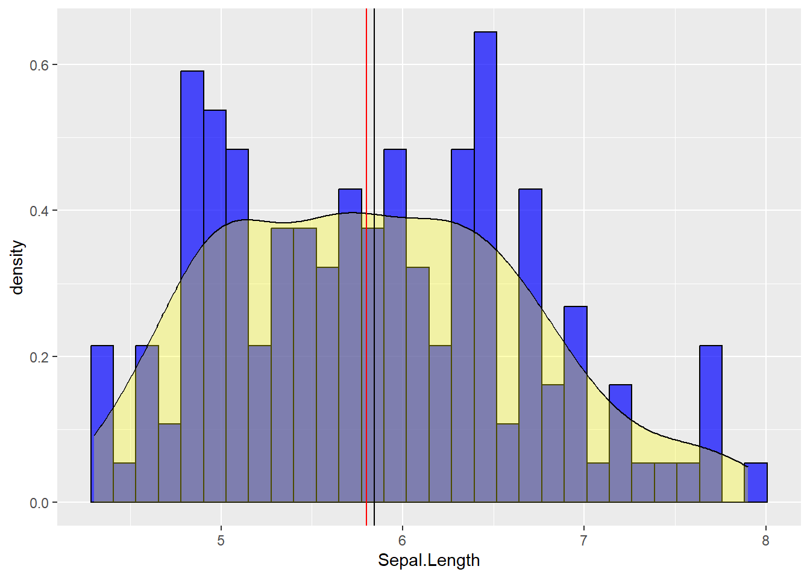
4.2.2.1 Adding a normal distribution indication
In software such as SPSS you get a reference to a normal distribution when plotting histograms. This is not by default in R so we will have to it ourselves. We can use stat_function() to draw a line that would depict how your variable would look like if your variable was normally distributed. Now, a normal distribution is made by two parameters: the mean and the standard deviation. Therefore, we must tell stat_function to use the mean and standard deviation of our variable. Moreover, we need to use our previous trick with y =..density..
# Histogram: black contours, white fill color
# A Line showing the normal distribution colored in blue
# Additionally:
# A black slightly transparent line indicating the mean
# Two dashed slightly transparent red lines indicating +/- 1SD from the mean
# Adjust the titles: plot title = "Histogram; x-axis= "Sepal width"; y-axis= "Frequency"
mydata %>% ggplot(aes(x=Sepal.Width)) + geom_histogram(aes(y=..density..),fill = "white", color ="black") +
stat_function(fun=dnorm, args=list(mean=mean(mydata$Sepal.Width), sd=sd(mydata$Sepal.Width)),color="blue") +
geom_vline(aes(xintercept = mean(Sepal.Width)), alpha = 0.8, color ="black") +
geom_vline(aes(xintercept = mean(Sepal.Width) - sd(Sepal.Width) ), linetype ="dotted", alpha = 0.8, color ="black") +
geom_vline(aes(xintercept = mean(Sepal.Width) + sd(Sepal.Width) ), linetype ="dotted", alpha = 0.8, color ="black") +
ggtitle("Histogram") + xlab("Sepal width") + ylab("Frequency") 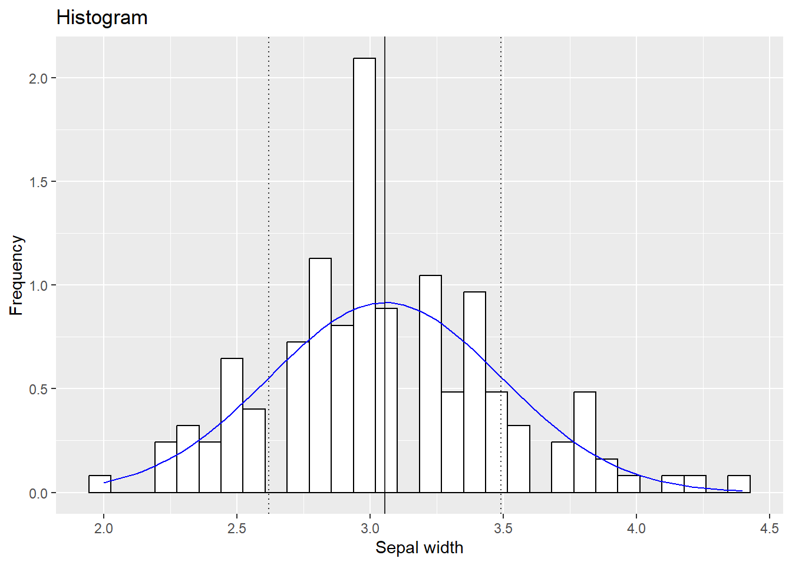
4.2.3 Violin plots
A personal favorite of mine, music to my ears. The violin may be a bit more exotic so allow me to explain. It can be described as a mirrored distribution plot. A box plot is put on top of it, so it will resemble a violin. The major strength of the violin is that, as a hybrid, it combines the advantages of the box plot (median/mean, quartiles,…) and the density plot (more detailed distribution). Suppose we want to compare the petal length across flower species:
# Violin plot: fill color per species; the mean is added in the box plots (using stat_summary)
mydata %>% ggplot(aes(y=Sepal.Length, x = Species, fill = Species)) +
geom_violin() +
geom_boxplot(color="black", alpha = 0.75) + stat_summary(func = mean)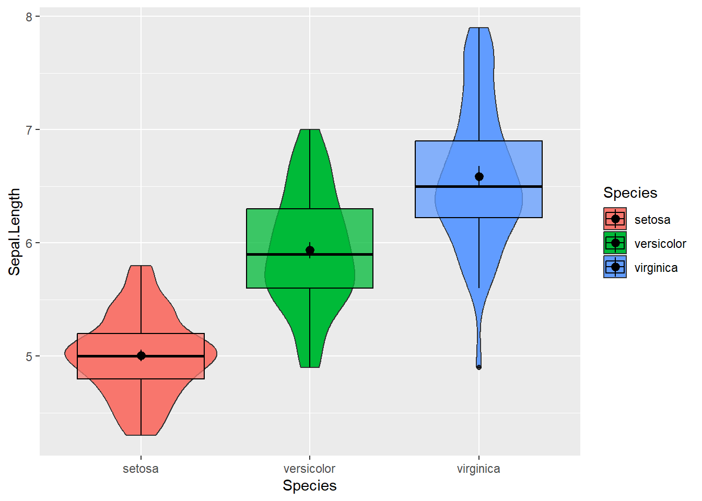
4.2.4 Split violin plots
One unfortunate part of violin plots is the redundancy of mirrored distributions. One half is enough. Luckily, packages like introdataviz made it easy to differentiate the right/left side (or top/down part as shown below). Suppose we can categorize flowers in young and old. Per species we could make one side of the violin reflecting young flowers, the other reflecting old ones. I must note that we cannot (yet) install introdataviz the “basic way”. We will have to use the devtools package:
### Split-violin plot
# Give a fill color per age group
# Getting tired of the standard colors that R will use? Tell R the colors you want (we will do it manually)
# Plot a transparent split-violin plot
# Here I will R to NOT trim the end points (just an aesthetical consideration)
# Plot a transparent box plot
# Add a dot to represent the mean
# Use position dodge to adjust where this dot will be placed
# Flip the plot (90 degrees to the left)
mydata %>% mutate(age = rep(c("young","old"),times=75)) %>%
ggplot(aes(y = Sepal.Length, x = Species, fill = age)) +
scale_fill_manual(values = c("royalblue", "gold1")) +
geom_split_violin(alpha = 0.5, trim = FALSE) +
geom_boxplot(color="black", alpha = 0.75, width = 0.2) +
stat_summary(fun = mean, position = position_dodge(0.15), color="black") +
coord_flip()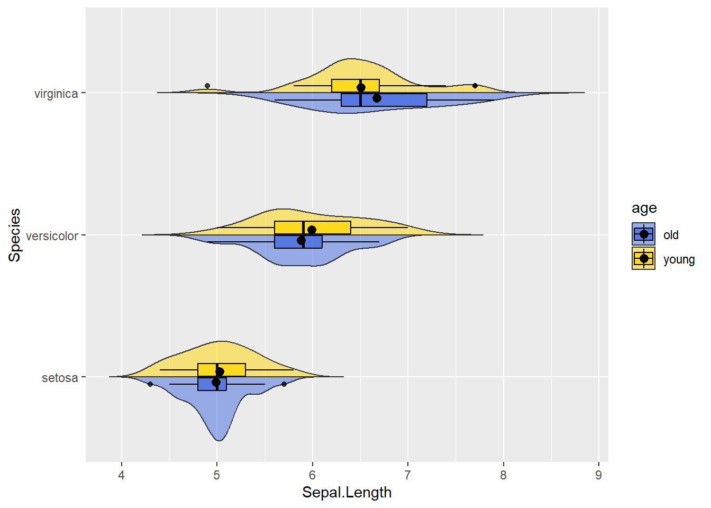
4.2.5 Bar graphs
# Bar plot (counting occurennces of a given letter)
# Plot a white transparent bar plot COUNTING the amount of letters in the dataset
data.frame(letters = c(rep(c("a"), each=10), rep(c("b"), each=7), rep(c("c"), each=15),
rep(c("d"), each=3), rep(c("e"), each=7))) %>%
ggplot(aes(x=letters)) +
geom_bar(color="black", fill="white", alpha = 0.75) 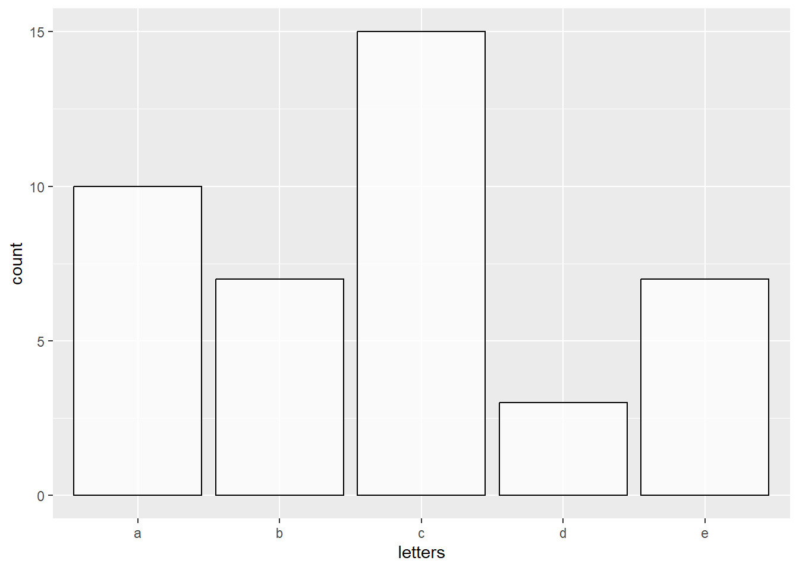
# Bar plot (showing the VALUES of the letter counts)
# Plot a white transparent bar plot "identifying the values" and showing them
# Note, instead of geom_bar(stat = "identity") we could use geom_col
data.frame(letters = c(rep(c("a"), each=10), rep(c("b"), each=7), rep(c("c"), each=15),
rep(c("d"), each=3), rep(c("e"), each=7))) %>%
group_by(letters) %>% count() %>%
ggplot(aes(x = letters, y = n)) +
geom_bar(stat = "identity", color="black", fill="white", alpha = 0.75)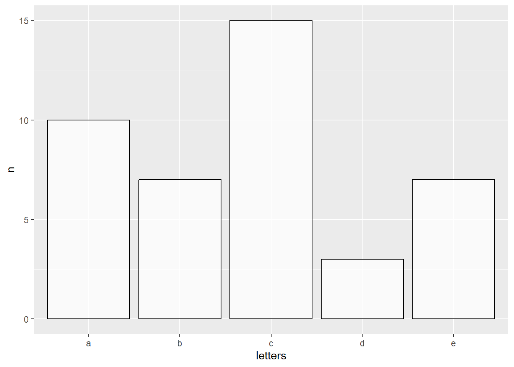
4.2.6 Piecharts
To my knowledge, there is no function like geom_pie within ggplot. Instead, pie-charts will actually take the form of a bar graphs (the identity type) and trough the coord_polar function these bars take a circular shape.
# Pie-chart
# Plot a bar plot ("identity") with a fill color per letter
# Transform to a circle (coord_polar)
# add percentages as text on the pie-chart
# To do so, in the our dataset we can add a variable depicting the percentage
# To the percentage value I will add a "%" sign
# Use the "Dark2" palette to adjust fill color
data.frame(letters = c(rep(c("a"), each=10), rep(c("b"), each=7), rep(c("c"), each=15),
rep(c("d"), each=3), rep(c("e"), each=7))) %>%
group_by(letters) %>% count() %>% mutate(letters=as.factor(letters)) %>% ungroup() %>%
mutate(percentage = as.character( round(n/sum(n)*100,1) ),
percentage = paste0(percentage,"%")) %>%
ggplot(aes(y=n, x="", fill = letters)) +
geom_bar(stat="identity", color="black", alpha = 0.75) +
coord_polar("y") +
geom_text(aes(label = percentage), color = "white",size = 2, position = position_stack(vjust = 0.5)) +
theme_void() +
scale_fill_brewer(palette="Dark2")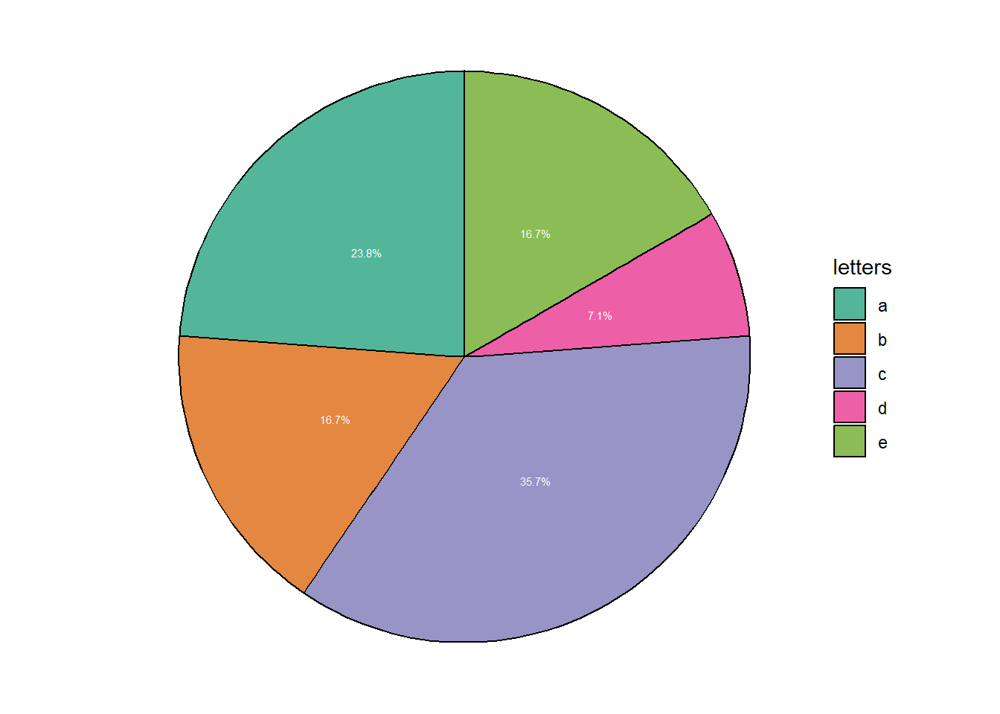
4.2.7 Scatter plots
Suppose we want to visually inspect if lower or higher values of petal length go with higher or lower values of the sepal length. In the example below,I will split the plot (containing all flower species on the same canvas) in three separate ones using facet_wrap() to ease looking at each species separately.
# Scatter plot: colored per species and separated by species
mydata %>% ggplot(aes(y=Petal.Length, x = Sepal.Length, color = Species)) +
geom_point() +
facet_wrap(~Species) +
ggtitle("Scatter plot") +
xlab("Sepal length") +
ylab("Petal length")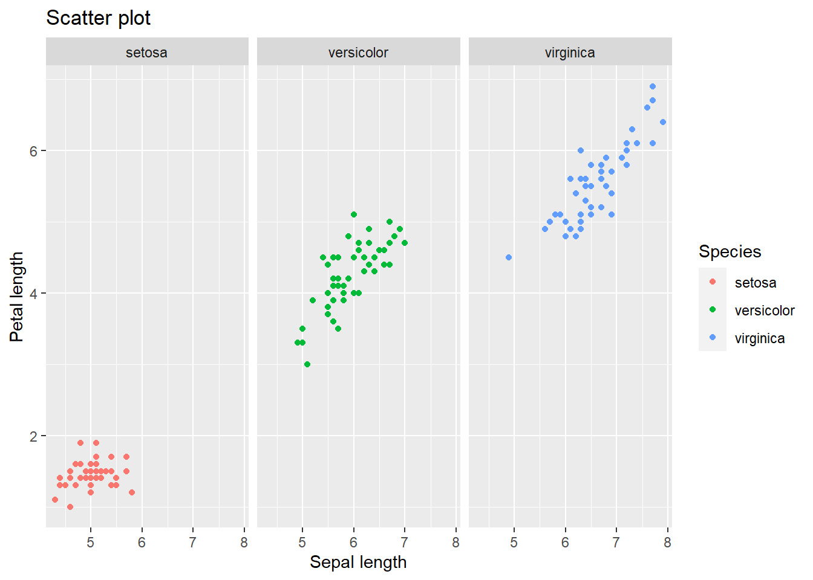
4.2.7.1 Adding a regression line
Say we want to quickly inspect whether we can “forcefully” draw a diagonal linear line between petal and sepal length (for a first indication of a linear relation). To do this we can employ the geom_smooth() function which will regress such a line and provide a spread around it (95% confidence interval by default but changeable). Lets add one in the plot above. Note that we will have a line per species separately.
mydata %>% ggplot(aes(y=Petal.Length, x = Sepal.Length, color = Species)) +
geom_point() +
facet_wrap(~Species) +
geom_smooth(method="lm", se=TRUE, color="black", fill="grey20") +
ggtitle("Scatter plot") +
xlab("Sepal length") +
ylab("Petal length")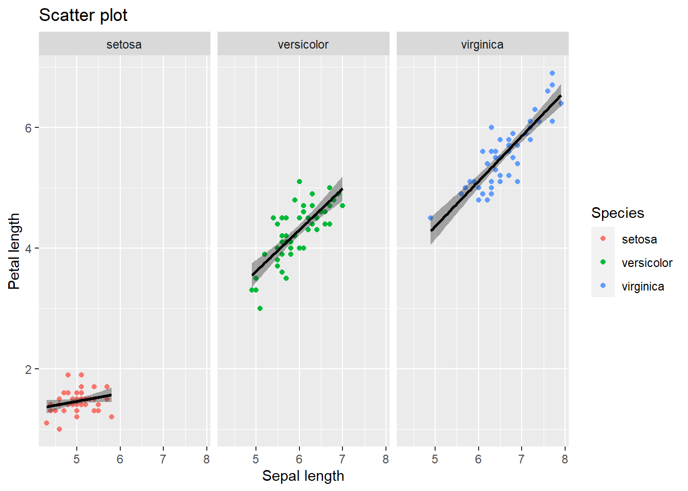
I can prove that geom_smooth() did a simple linear behind the scenes. I will just need to quickly extract some parameters from the linear regression (spoilers for the next chapter). For simplicity lets focus on the species “Setosa”. Ta-da:
mydata_setosa = mydata %>% filter(Species=="setosa") # Keeping one species
mylm = lm(Petal.Length ~ Sepal.Length,data=mydata_setosa) # linear regression
mydata_setosa %>% mutate(
the_line = predict(mylm), # Extract the predicted values (forming the line)
CI_lower = as.data.frame(predict(mylm,interval="confidence"))$lwr, # Lower bound
CI_upper = as.data.frame(predict(mylm,interval="confidence"))$upr # Upper bound
) %>%
ggplot(aes(x = Sepal.Length)) +
geom_point(aes(y = Petal.Length), color="firebrick") +
geom_line(aes(y = the_line), color="black") +
geom_ribbon(aes(ymin = CI_lower, ymax = CI_upper), fill="grey20",alpha=0.25) +
ggtitle("Scatter plot") +
xlab("Sepal length") +
ylab("Petal length")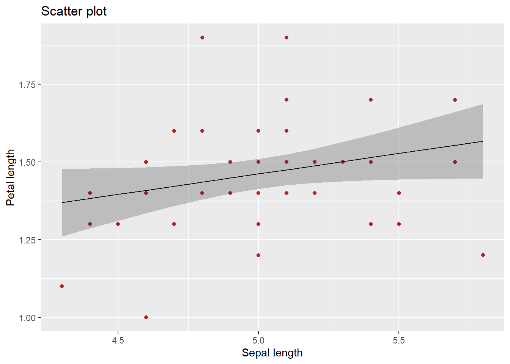
Now, geom_smooth can also be used to quickly inspect other patterns in the data. For example, lets use the default “LOESS” argument which will not draw a straight line but rather will “loosely” follow the data (i.e., using local averaging which “rolls” out the mean across the x-axis). The result should resemble pasta al dente. Below I will also hide the 95% confidence interval
mydata %>% ggplot(aes(y=Petal.Length, x = Sepal.Length, color = Species)) +
geom_point() +
facet_wrap(~Species) +
geom_smooth( se=FALSE, color="black", fill="grey20") +
ggtitle("Scatter plot") +
xlab("Sepal length") +
ylab("Petal length")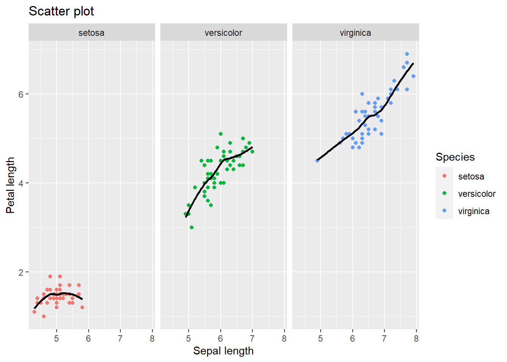
4.3 How to customize your plots
Up-till now I have not paid much attention to the appearance of the plots. Just as the data is “fluid”, plots are as well. Ggplot allows full customization of the canvas and everything on it.
4.3.1 changing the theme, colors, fonts, combining plots, and adding p-value indications
You can change each individual element of the theme click here for an overview. If you clicked, you have noticed that there is a lot that you can change. To avoid a lengthy discussion, I will about the default themes and give two relevant demonstrations in which.
The ggplot2 package has several built-in themes. By default ggplot goes with theme_grey, the one you saw in each plot. Other built-in themes include theme_bw(), theme_linedraw(), theme_light(), theme_dark(), theme_minimal(), theme_classic(), and theme_void(). Click here to have look Personally,I mainly choose theme_classic() as I will do in the following examples.
4.3.2 Example 1
Suppose you collected a number of flower species and measured their petal length. You want a plot that shows whether the differences in the average petal length between species are statistically significant (based on p-values). In addition, you are subjected to certain rules: 1. No color, only grayscale 2. There must a confidence interval. Here lets pretend(!) that the upper and lower bounds of our confidence intervals are half a standard deviation above and below the average petal length. 3. Times New Roman font style with font size 12 for the titles of the x- and y-axis, font size 14 for the title presented in bold, font size 10 for the text of the marks. 4. The legend ought to be placed on the bottom
I will use the stat_pvalue_manual() function from the ggpubr package as it is user-friendly for the “novice” R user. Crucially, the stat_pvalue_manual functions demands a couple of things from you**: a first group, a second group, and the position of y-axis where you want to put the p-values. All will be clarified soon.
First things first, we need to calculate the average petal length per species as well as our confidence intervals (i.e., upper and lower bounds). group_by() and summarize() from dplyr can help here. As you recall, this creates a mini dataset. To this miniature dataset I will have to add five things: group 1, group 2, the obtained p-value (arbitrary for current demonstration purposes), statistical significance signs, and the position on the y-axis where I want to put the p-values.
What is group 1 and group 2? Well in our example we compare 3 species with one another, so species A with B, A with C, and B with C. In group 1 we add the left side of all comparisons (A with B, A with C, and B with C). In group 2 we add the right side of the comparison (A with B, A with C, B with C). If you would compute this and view your dataset you will see that you have each combination beneath one another. Let’s Move on, about the p-value, I will arbitrarily choose values for each combinations: <.001 (A with B), .040 (A with C), and .231 (B and C). Keeping these values in mind, the sign of our p-values will be respectively three stars (p<.001), one star (p =.040), and “not significant” (p = .231). Finally, about y-position, I could put them in a position corresponding with the petal length averages. However, this would look unclear so I will add a value to these averages so that the position will shift from slicing the top of the bar to “hoovering” a bit above it.
mydata_example1 = mydata %>% group_by(Species) %>% summarise(average_Petal_Length=mean(Petal.Length),
CI_lwr = average_Petal_Length - (0.5*sd(Petal.Length)),
CI_upr = average_Petal_Length + (0.5*sd(Petal.Length))
) %>%
mutate(
p = c("(<.001)","(.040)","(.231)"), # Adding the ARBITRARY p-values
p_notation = c("***","*","ns"), # The "signs" of the above p-values
group1 = c("setosa","setosa","versicolor"),
group2 = c("versicolor","virginica","virginica"),
y.position = average_Petal_Length + 4 # For the y-position, adding it with 4 so it "hoovers" above the bars.The x-position will correspond with Species
)Create the bars with the p-values on top (ignoring rules such as grayscale).
library(ggpubr)
mydata_example1 %>% ggplot(aes(x=Species,y=average_Petal_Length,fill=Species)) +
theme_classic() +
geom_bar(stat="identity") +
geom_errorbar(aes(ymin = CI_lwr, ymax = CI_upr), width=0.2) +
stat_pvalue_manual(mydata_example1, label = "{p} {p_notation}", size =3)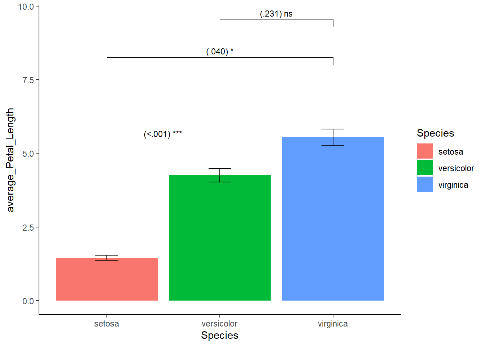
This looks acceptable. However, here we encounter something unexpected, notice the bars float above the x-axis? To bring the bars down, I specify the range of y-axis using coord_cartesian() and use the scale_y_continuous() function.
mydata_example1 %>% ggplot(aes(x=Species,y=average_Petal_Length,fill=Species)) +
theme_classic() +
geom_bar(stat="identity") +
geom_errorbar(aes(ymin = CI_lwr, ymax = CI_upr), width=0.2) +
stat_pvalue_manual(mydata_example1, label = "{p} {p_notation}", size =3) +
coord_cartesian(ylim=c(0,10)) + # new
scale_y_continuous(expand = expansion(mult = c(0, 0))) # new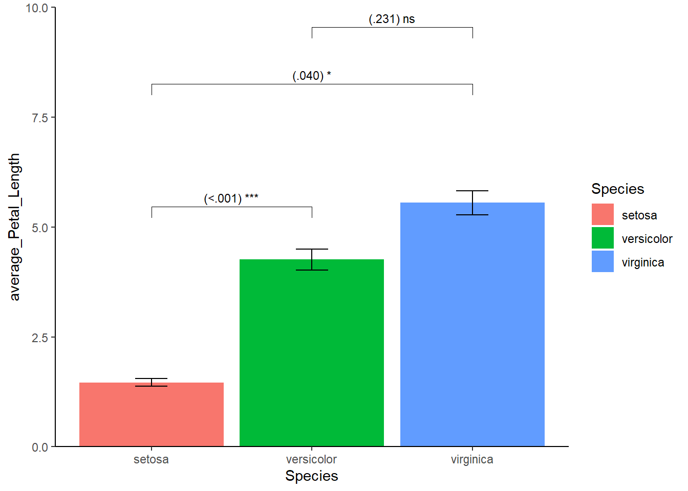
Good, lets’ address our given rules. To get grayscale we can use the scale_fill_manual function to need to determine the colors ourselves. Font family, size, and style (or face) can be changed in the theme(). Titles are by default left-aligned but this can easily fixed. Similar to the font, the position of the legend (even its existence) can be changed in the theme(). Since we have a legend, we don’t need a title on the x-axis plus there is no need for mentioning the word “species” in the legend itself. The end product:
mydata_example1 %>% ggplot(aes(x=Species,y=average_Petal_Length,fill=Species)) +
theme_classic() +
geom_bar(stat="identity") +
geom_errorbar(aes(ymin = CI_lwr, ymax = CI_upr), width=0.2) +
stat_pvalue_manual(mydata_example1, label = "{p} {p_notation}", size =3) +
coord_cartesian(ylim=c(0,10)) +
scale_y_continuous(expand = expansion(mult = c(0, 0.0))) +
scale_fill_manual(values=c("grey65","grey45", "grey25")) +
xlab("") + ylab("Average petal length") + ggtitle("Comparing species based on petal length") +
theme(
axis.title.y = element_text(size=12, family = "Times New Roman"),
plot.title = element_text(size = 14, family = "Times New Roman", face="bold",hjust = 0.5), # h(orizontal)just ranges from 0 (left) to 1 (right) so 0.5 is the middle
axis.text.y = element_text(size = 10), # text on the "ticks" on the y-axis
axis.text.x = element_text(size = 10), # text on the "ticks" on the x-axis
legend.position = "bottom",
legend.title = element_blank() # otherwise the word "Species" will appear in the legend
)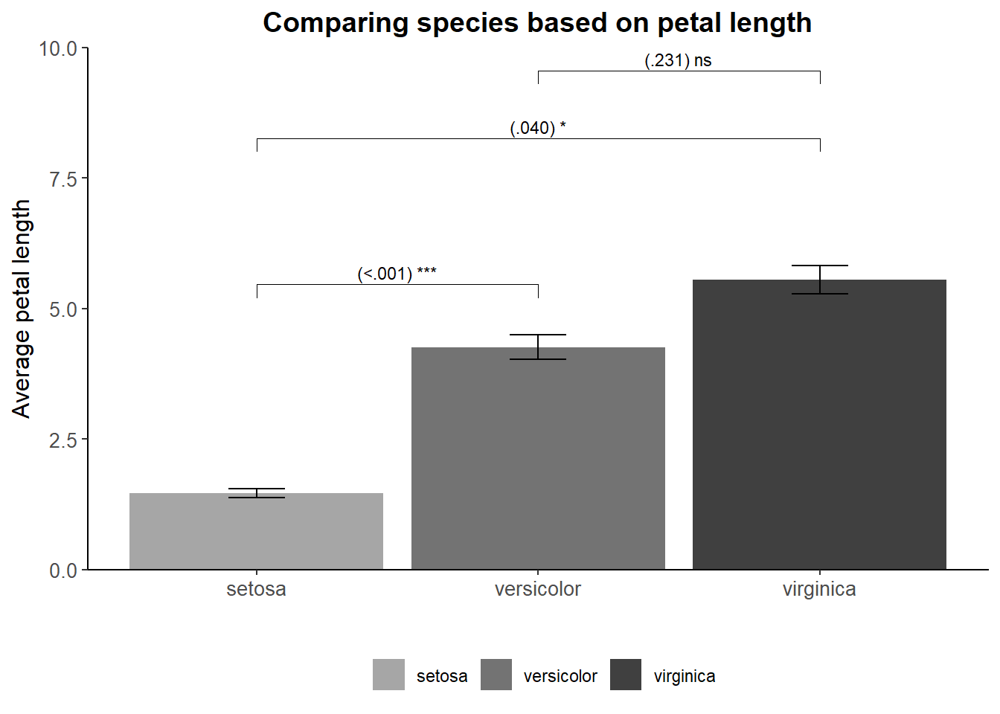
4.3.3 Example 2
Staying with the flowers. Suppose you want to have scatter plot using sepal width (x-axis) and sepal length (y-axis). Above this scatter plot you want a histogram of the predictor (the variable on the x-axis); on the right side you want a histogram of the outcome (variable on the y-axis). This time, you get the following rules. 1. No legend 2. Use the following colors: hotpink2, darkgoldenrod3, and darkorchid1 yes these are colors in R, click here 3. The name of the species should be put somewhere random on the scatter plot without using aes(). 4. The histogram of the outcome should be rotated 90° to the right. 5. Histograms should be small in height, have 20 bins, and have a “normal distribution showing line”.
Good, so we will need to make 3 graphs: one scatter plot, two histograms. We can use the package cowplot to “glue” the plots together into one object. The same package can also be used to reduce the height of the histograms.
We are already familiar with scatter plots. The novelty is the removal of the legend but this can be easily done in the theme(). For the text objects (the species), we can use geom_text and place it somewhere. I will name the plot “scatter”.
scatter = mydata %>% ggplot(aes(y = Sepal.Length, x = Sepal.Width, color = Species)) +
theme_classic() +
scale_color_manual(values = c("hotpink2","darkgoldenrod3","darkorchid1")) +
geom_point() +
geom_text(label="Setosa", x=2.1, y=7.5,color="hotpink") +
geom_text(label="Versicolor", x=2.1, y=7.2,color="darkgoldenrod3") +
geom_text(label="Virginica", x=2.1, y=6.9,color="darkorchid1") +
ylab("Sepal length") + xlab("Sepal width") +
theme(
legend.position = "none" # Removes the legend
)We are also familiar histograms with a “normal distribution line”. I will remove the x-and y-axis, text, and tick marks (those small vertical stripes on an axis). This can be done in the theme() as shown in the code for histogram “hist_x” but we can also use theme_void() as shown in the code for histogram “hist_y”. Very important, since we need to rotate one of our histograms using the coord_flip() function, my tip is to put coord_flip() right after ggplot(). The histogram could change to some extend If you put coord_flip later in the code!
hist_x = mydata %>% ggplot(aes(x = Sepal.Width)) +
geom_histogram(aes(y=..density..),fill="grey40",color="grey10", bins = 20) +
stat_function(fun=dnorm, args=list(mean=mean(mydata$Sepal.Width), sd=sd(mydata$Sepal.Width)),color="hotpink", linetype = "dotdash",size=2) +
xlab("") + ylab("") +
theme_classic() +
theme(
axis.line.x = element_blank(),
axis.ticks.x = element_blank(),
axis.text.x = element_blank(),
axis.line.y = element_blank(),
axis.ticks.y = element_blank(),
axis.text.y = element_blank()
)
hist_y = mydata %>% ggplot(aes(x = Sepal.Length)) +
coord_flip() +
geom_histogram(aes(y=..density..),fill="grey40",color="grey10", bins = 20) +
stat_function(fun=dnorm, args=list(mean=mean(mydata$Sepal.Length), sd=sd(mydata$Sepal.Length)),color="hotpink", linetype = "dotdash",size=2) +
xlab("") + ylab("") +
theme_void()Alright, lets use the cowplot package to glue the plots together and make it so that the histograms are shorter, putting the scatter plot is in the spotlight. Now our current example where you want to put one plot in the spot light and putting multiple smaller plots above,below,left, or right, is a tricky one. If we did not have to adjust the size of the histograms, we could have done something simple like this:
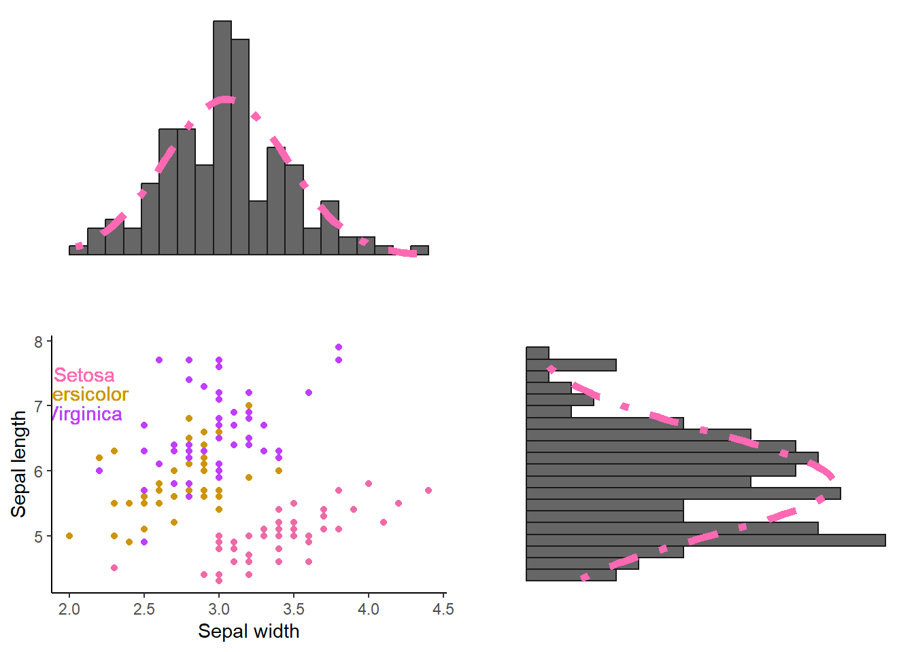
Where align = “hv” ensures that the axes are lined up appropriately both horizontally and vertically. If we would have to add only one histogram (e.g., the y-axis one), we could have done something like this:
plot_grid(
scatter,hist_y,
rel_widths = c(1,0.3), # Here the width of the histogram is multiplied by factor 0.3
align="h" # horizontally
)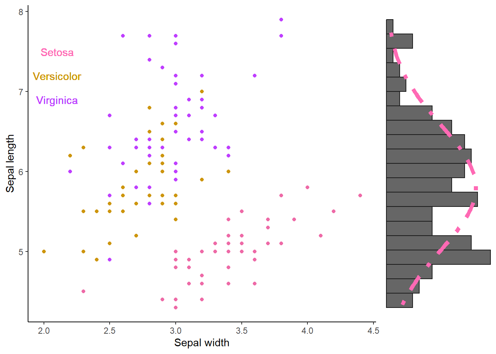
But enough of that, lets reduce the size of the histograms and align them to the scatter plot. In this case, we need to first align our histograms using the align_plots() function from the cowplot package. Then we can use these aligned histograms alongside our scatter plot
# Create the aligned histograms (aligned to the scatter plot).
aligned_hist_x = align_plots(hist_x, scatter, align = "v")[[1]] # [[1]] will extract the aligned version of our original hist_x
aligned_hist_y = align_plots(hist_y, scatter, align = "h")[[1]]
# Arrange plots
plot_grid(
aligned_hist_x
, NULL
, scatter
, aligned_hist_y
, ncol = 2
, nrow = 2
, rel_heights = c(0.3, 1) # hist_x reduced in size, NULL (nothing) with no size adjustments
, rel_widths = c(1, 0.3) # scatter plot with no size adjustments sized, hist_y reduced in size
)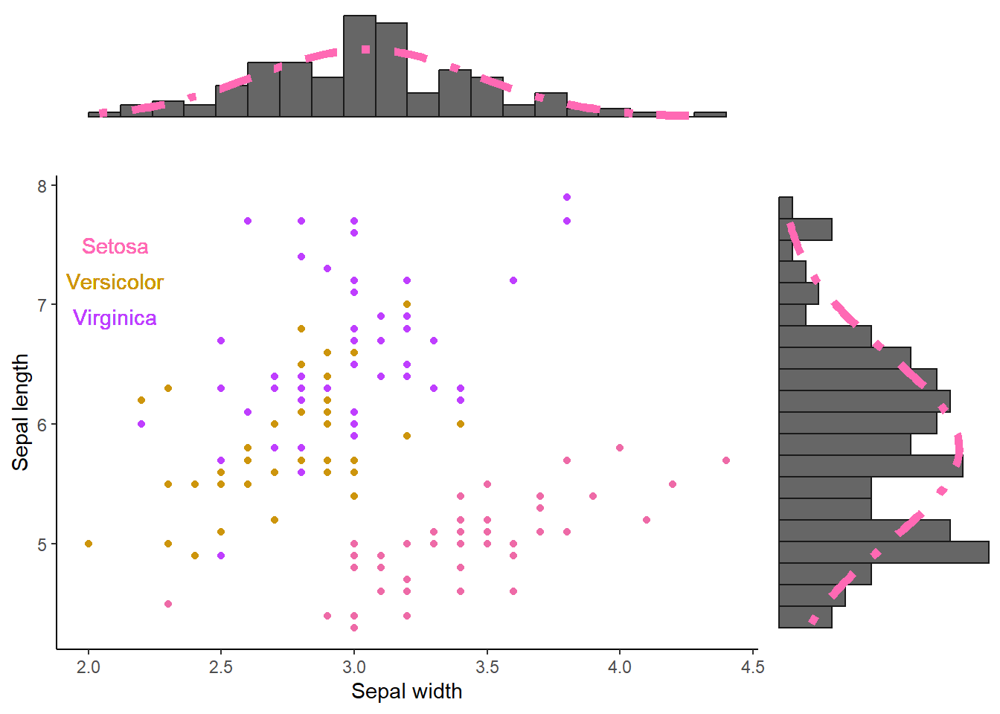
4.4 Interactive plots
Wrapping up this section, and you have many “cluster units” (participants, test subjects, etc.). You want to plot the change in some measurement per cluster unit, over time. We could quickly visualize this:
mydata = data.frame(
participant = factor(rep(c(1:50),times = 5)),
score = runif(250,1,10),
time = rep(c(1:5), each = 50)
)
mydata %>% ggplot(aes(y=score, x=time, color=participant)) +
geom_point() + geom_line()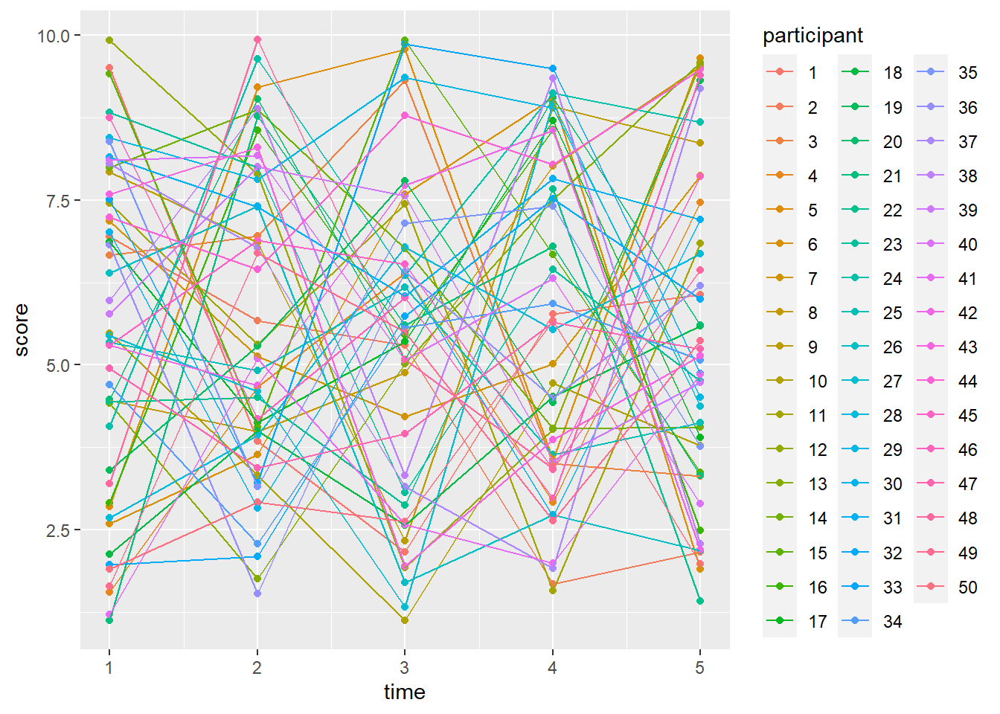
Have fun figuring out the change per participants… Luckily, the ggplotly() function from the plotly package package offers to interact with our plots. If you use plotly(), and you have a lot of cluster units, make sure to remove the legend (you will have access to it anyways) otherwise it will be only the legend that you will see.
Look at the plot below. This is a plot that you can interact with on this very own webpage. Hover over any of the dots and you should see a mini window showing the time, score, and participant. In R Markdown and R Studio, you would also see the list of participants on the left side. Unfortunately you cannot see that part on this webpage so I will have to describe it. If I would click once on participant 1 in the participant list (that you cannot see), it would temporarily remove that participant in the plot. If I would click once on them again, they will reappear. If I Click twice rapidly in succession on participant 20, I would only see the dots and lines of this participant. If I would click twice again, everything changes to normal. In short, you can “show” and “hide” participants at will. There are some others you can do but this is beyond the scope of this guide.
library(plotly)
ggplotly(
mydata %>% ggplot(aes(y=score, x=time, color=participant)) +
geom_point() + geom_line() +
theme(
legend.position = "none"
)
)The last plot of this chapter. Before we can rest our eyes for a bit,
Since we have multiple measurements per cluster unit, we could consider to plot a simple regression line per participant (again just for demonstration purposes). Here we could consider to plot the simple regression slope per participant alongside the overall slope
ggplotly(
mydata %>% ggplot(aes(y=score, x=time, color=participant)) +
geom_smooth(method="lm", se = FALSE) + # per participant
geom_smooth(aes(group=0), method="lm", se = FALSE, color="black") + # Overall (I like to call this "ungrouping")
geom_smooth(aes(group=0), se = FALSE, color="black", linetype="dashed",alpha=0.75) +
theme(
legend.position = "none"
)
)In ending, I want to note that I will show more different plots in later parts such as when discussing linear regressions (e.g., johnson-neyman intervals) and mediation (path diagrams).